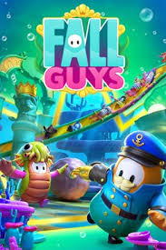

ABOUT US
Fall Guys (formerly known as Fall Guys: Ultimate Knockout)[1] is a free-to-play platform battle royale game developed by Mediatonic and published by Epic Games. The game involves up to 40 players who control jellybean-like characters and compete against each other in a series of randomly selected mini-games, such as obstacle courses or football. Players are eliminated as the rounds progress until, eventually, the last remaining player is crowned the winner. The game draws inspiration from game shows like Takeshi's Castle, It's a Knockout, Total Wipeout, and playground games like tag and British Bulldog.[2][3]
The game was released by Devolver Digital for PlayStation 4 and Windows on 4 August 2020. Following their acquisition of Mediatonic, the publishing rights were transferred to Epic Games. Subsequently, the game was made free-to-play on 21 June 2022 and released on additional platforms including Nintendo Switch, PlayStation 5, Xbox One and Xbox Series X/S, with full cross-platform play support among all platforms.[4][5] As part of the transition, the game adapted a seasonal battle pass system for its monetization, offering avatar customizations to players.
Fall Guys received positive reviews from critics for its chaotic gameplay and visual appearance, however fan reception has been more critical in recent times. The game was a commercial success, selling more than 10 million copies and attracting more than 50 million players after the game went free-to-play. Since the game's launch Mediatonic has released numerous updates for the game; the tenth and current season is digital themed.[6]